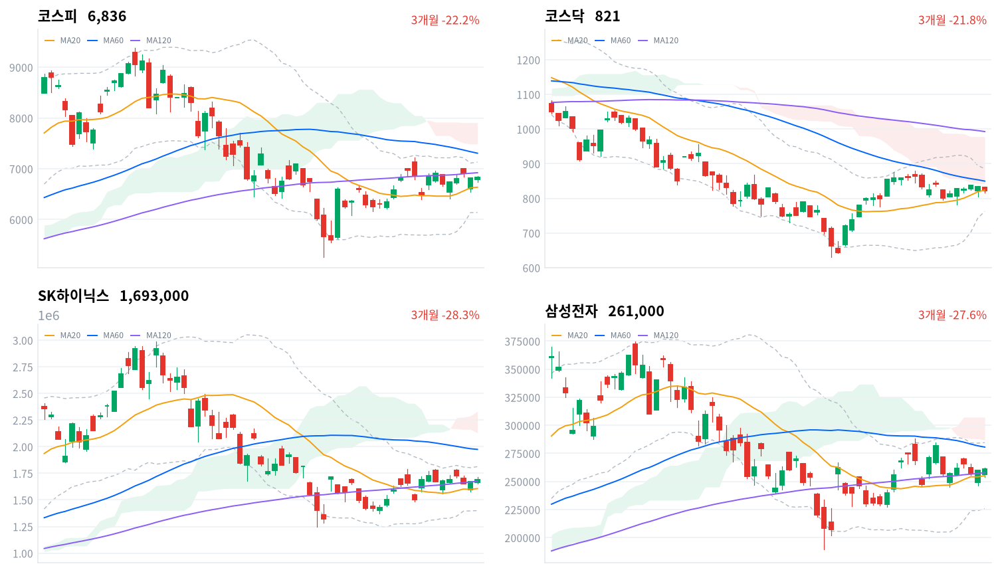
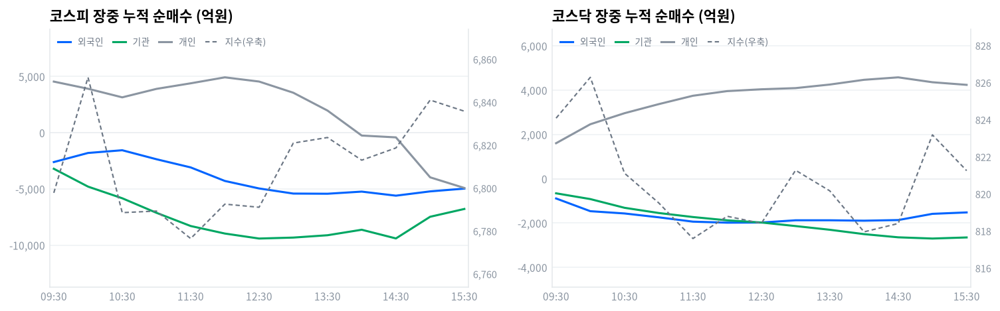

코스피는 오늘 0.23% 올라 6,836으로 마감했다. 개인·외국인·기관이 모두 순매도였는데도(당일 잠정) 이틀 연속 지수가 오른 것은, 삼성전자·SK하이닉스의 자사주 매입이 지수를 방어하고 있다는 뜻이다.
코스닥은 1.56% 내린 821.25로 마감해 코스피와 정반대로 움직였다. 반도체 두 종목을 뺀 나머지 시장에는 여전히 매도 압력이 짙게 깔려 있다.
코스피는 오늘 0.23% 올라, 코스닥은 1.56% 내려 각각 마감했다. 코스피에서는 개인·외국인·기관 세 주체가 모두 순매도였는데도(당일 잠정) 지수가 올랐고, 이 조합은 어제(8월31일)에 이어 이틀째 반복됐다.
세 주체가 함께 팔았는데 지수가 오른 이유는 자사주 매입에 있다. 삼성전자·SK하이닉스가 지난주 발표한 자사주 매입이 이틀째 지수를 받치고 있고, 오늘 장중 기타법인 누적 순매수는 정규장 마지막 관측에서 1조6,662억원까지 불어났다. 다만 반도체와반도체장비 업종은 172종목 중 42개만 오르며 지수는 0.76% 상승에 그쳤다 — 넷 중 하나꼴(24.4%)만 오른 좁은 상승이라, 오늘 강세가 두 대형주에 크게 의존했다는 뜻이다.
위험 노출은 다음 세션까지 축소한다. 코스닥이 뚜렷하게 내리고 반도체 상승의 폭이 좁다는 것은, 오늘 지수 방어가 시장 전체의 매수가 아니라 두 종목의 자사주 매입에 의존하고 있다는 신호다. 여기에 외국인이 코스피에서 이틀 연속 순매도를 이어간 것까지 겹쳐, 자사주 매입이 끝나거나 늦춰지면 지수를 받쳐 줄 다음 매수 주체가 뚜렷하지 않다.
이 판단을 다시 볼 조건은 둘이다. 코스피가 120일 이동평균(6,921)을 뚫고 오르면 반등이 자사주 매입을 넘어 폭넓은 매수로 번졌다는 뜻이라 노출을 다시 늘릴 근거가 된다. 반대로 외국인이 코스피에서 하루라도 순매수로 돌아서면, 이틀째 이어진 순매도가 끝났다는 뜻이라 마찬가지로 판단을 재검토할 시점이다.
전 거래일 미국 증시는 3대 지수가 모두 내렸다. 다우가 -0.70%, S&P500이 -0.33%, 나스닥이 -0.12% 하락했다.
같은 날 아시아는 엇갈렸다. 대만가권이 +1.78% 올랐지만 항셍 -0.93%, 상해종합 -0.16%, 닛케이 -0.15%는 내렸다. 아시아 평균은 +0.14%였고 코스피는 이 평균을 +0.10%포인트 웃돌았다.
코스피는 전일 종가(6,820)보다 낮은 6,784에서 출발했다. 개장가 기준 갭다운은 -0.52%였다. 한국 정규장이 열린 시간대 미국 선물은 엇갈려 E-mini S&P500이 -0.11%, 나스닥 선물이 +0.05% 움직였다.
오전 9시 6,769까지 한 차례 더 밀렸던 코스피는 반등해 오전 10시 6,852까지 올라 장중 고점권을 만들었다. 이후 낮 12시반까지 방향 없이 좁게 오갔다. 오후 들어 상승 폭을 다시 키워 오후 3시 6,841까지 올랐고 마감 무렵 소폭 반락하며 정규장을 마쳤다.
코스닥은 831.96에서 출발해 오전 11시반 818까지 하락을 이어갔고, 오후 2~3시 잠시 되올랐지만 마감 무렵 되밀리며 하락 마감했다.
원/달러 환율은 오전 9시 1,364원으로 하루 중 가장 낮았다가 오후 1시30분 1,373원까지 올랐다. 1,371원으로 정규장을 마쳐, 미국 금리 경계감이 큰 날 원화가 하루 내내 약세 쪽으로 기운 흐름이었다.
오늘을 만든 것은 두 가지다. 하나는 자사주 매입 효과가 이틀째 이어지며 코스피를 지수 상승분(+15.78포인트)만큼 밀어올린 것이고, 다른 하나는 이란-미국 충돌로 국제유가가 급등하며 석유와가스 업종이 5.16% 오른 것이다. 반대로 코스닥은 알테오젠·에코프로 등 대형주 약세로 코스피와 반대 방향으로 움직였다.
코스피는 오늘 6,836으로 마감해 20거래일 고점(7,217)보다 5.6% 낮은 자리다. 같은 기간 저점(6,080)과 비교하면 12.4% 높은 위치이기도 하다. 오늘 장중 고가와 저가 차이는 125포인트로 종가의 1.8%에 그쳐 최근 흔들림에 비하면 잔잔한 하루였고, 그 좁은 폭 안에서도 20일 이동평균(6,635)을 3.0% 웃돈 채 마감했다.
| 지수 | 종가 | 등락률 | 시가 | 고가 | 저가 | 전일 종가 |
|---|---|---|---|---|---|---|
| 코스피 | 6,835.80 | +0.23% | 6,784.29 | 6,857.35 | 6,732.47 | 6,820.02 |
| 코스닥 | 821.25 | -1.56% | 831.96 | 833.52 | 815.52 | 834.29 |
전일 종가보다 낮은 6,784에서 출발한 코스피는 오전 9시 6,769까지 한 차례 더 밀렸다. 이후 반등해 오전 10시 6,852까지 오르며 장중 고점권을 만들었다.
오전 10시반부터 낮 12시반까지는 6,776~6,793 사이에서 좁게 오갔다. 방향이 뚜렷하지 않은 구간이었다.
오후 들어 상승 폭을 다시 키워 오후 1시 6,821, 오후 3시 6,841까지 올랐다. 마감 무렵에는 소폭 반락하며 하루를 마쳤다.
코스닥은 831.96에서 출발해 오전 9시반 824까지 밀렸고, 오전 11시반 818까지 하락을 이어갔다. 낮 12시반부터 오후 1시까지도 818~821 사이에서 좀처럼 반등하지 못했다.
오후 2시 818, 오후 3시 823으로 잠시 되올랐지만 마감 무렵 821로 되밀리며 하락 마감했다. 코스피가 반도체 두 종목에 힘입어 오른 반면, 그 수혜에서 비켜선 코스닥은 하루 종일 약세를 벗어나지 못했다.

코스피·코스닥·SK하이닉스·삼성전자 3개월 일봉에 이동평균(20·60·120)·볼린저밴드·일목균형표 구름대를 오버레이했다. 상승 캔들은 녹색, 하락 캔들은 적색으로 표시된다.
코스피(6,836)는 일목 전환선(6,698)과 20일 이동평균(6,635) 위에서 마감을 이어갔다. 이 구간을 지키면 120일 이동평균(6,921)이 다음 저항이고, 전환선 아래로 밀리면 20일 이동평균(6,635)이 다음 지지고, 그마저 밀리면 기준선(6,240)까지 열린다.
코스닥(821)은 20일 이동평균(824)을 바로 위 저항으로 두고 일목 전환선(816)을 지지 삼아 마감했다. 이동평균을 넘어서면 구름 하단(842)이 다음 저항이고, 전환선이 밀리면 기준선(755)까지 지지가 비어 있다.
SK하이닉스(169만원)는 전환선(167만원)과 20일 이동평균(161만원)을 모두 아래에 두고 마감했다. 이 두 선을 지키면 20일 고점(179만원)까지 반등 여지가 있고, 무너지면 기준선(153만원)이 다음 지지다.
삼성전자(26.1만원)는 전환선(26.5만원)을 바로 위 저항으로 두고 20일 이동평균(25.5만원)을 지지 삼아 마감했다. 전환선을 넘어서면 반등 폭을 키울 수 있고, 이동평균이 밀리면 기준선(23.9만원)까지 열린다.
위 레벨은 일목균형표와 스윙 고저를 기계적으로 계산한 값이며 투자 권유가 아니다.
| 주체 | 순매수(억원) |
|---|---|
| 개인 | -5,402 |
| 외국인 | -4,968 |
| 기관 | -6,286 |
| 주체 | 순매수(억원) |
|---|---|
| 개인 | +4,389 |
| 외국인 | -1,531 |
| 기관 | -2,787 |
코스피에서는 세 주체가 다시 모두 팔았다. 기관이 6,286억원으로 가장 크게 팔았고, 개인이 5,402억원, 외국인이 4,968억원을 각각 순매도했다(당일 잠정). 어제도 개인·외국인·기관이 나란히 순매도였는데 지수는 올랐고, 오늘로 이틀째 같은 조합이 반복됐다.
코스닥에서는 개인만 4,389억원 순매수였고 기관 2,787억원, 외국인 1,531억원이 순매도했다(당일 잠정). 개인 매수 규모가 기관·외국인 매도 합계와 비슷했는데도 지수가 1.56% 내린 것을 보면, 코스닥에서는 매수 강도만으로 방향이 정해지지 않았다.

누적 순매수(억원), 정규장 09:30~15:30 30분 앵커 기준. 지수는 우측 축.
| 시각 | 코스피(억원) | 코스닥(억원) | ||||
|---|---|---|---|---|---|---|
| 개인 | 외국인 | 기관 | 개인 | 외국인 | 기관 | |
| 09:30 | +4,548 | -2,609 | -3,206 | +1,608 | -888 | -655 |
| 10:00 | +3,913 | -1,800 | -4,792 | +2,464 | -1,462 | -915 |
| 10:30 | +3,147 | -1,557 | -5,828 | +2,963 | -1,565 | -1,309 |
| 11:00 | +3,900 | -2,357 | -7,122 | +3,372 | -1,739 | -1,544 |
| 11:30 | +4,395 | -3,084 | -8,296 | +3,751 | -1,934 | -1,726 |
| 12:00 | +4,926 | -4,289 | -8,966 | +3,960 | -1,981 | -1,875 |
| 12:30 | +4,552 | -4,956 | -9,410 | +4,043 | -1,974 | -1,973 |
| 13:00 | +3,558 | -5,411 | -9,325 | +4,096 | -1,873 | -2,134 |
| 13:30 | +1,971 | -5,426 | -9,117 | +4,257 | -1,873 | -2,301 |
| 14:00 | -250 | -5,237 | -8,628 | +4,471 | -1,891 | -2,498 |
| 14:30 | -413 | -5,598 | -9,401 | +4,582 | -1,863 | -2,642 |
| 15:00 | -3,966 | -5,217 | -7,474 | +4,361 | -1,582 | -2,697 |
| 15:30 | -4,912 | -4,970 | -6,780 | +4,243 | -1,518 | -2,648 |
코스피 외국인·기관 누적 순매수는 하루 종일 순매도 한 방향으로만 흘렀다. 외국인 매도는 오후 2시33분 5,623억원까지 커졌다가, 마감 무렵(정규장 마지막 관측)에는 4,970억원으로 소폭 줄었다. 같은 시간 지수는 오후 들어 상승 폭을 키웠으니, 오늘 반등을 외국인이 만든 것은 아니다.
개인 누적 순매수는 오전 9시40분 5,096억원까지 늘었다가 오후 1시48분 순매도로 돌아섰다. 이후 매도가 이어지며 마감 무렵 4,912억원 순매도로 커졌다. 개인·외국인·기관 모두 오후에도 매도를 이어가거나 매도로 돌아선 바로 그 시간대에 지수는 상승 폭을 키웠다.
같은 시간 기타법인 누적 순매수만 꾸준히 늘어 마감 무렵 1조6,662억원에 이르렀다. 자사주 매입이 오후 반등의 사실상 유일한 매수 축이었다는 뜻이다.
기관 내부를 나누면 성격이 갈린다. 선물·프로그램 연계 매매인 금융투자가 정규장 마지막 관측에서 6,310억원 순매도로 기관 전체 매도(6,780억원)의 대부분을 차지했다. 반면 정책성 장기자금인 연기금등은 51억원 순매수로 사실상 관망했다.
정규장 마지막 관측에서 당일 잠정 집계로 넘어가며 오차가 있었다. 외국인 순매도는 4,970억원에서 4,968억원으로 사실상 그대로였지만, 기관은 6,780억원에서 6,286억원으로 매도 규모가 줄었다(당일 잠정). 다음 거래일에는 자사주 매입이 계속되는지, 외국인이 순매수로 돌아서는지를 함께 봐야 한다.
| 시장 | 차익 순매수(억원) | 비차익 순매수(억원) | 전체 순매수(억원) |
|---|---|---|---|
| 코스피 | -238 | -2,962 | -3,200 |
| 코스닥 | -59 | -1,817 | -1,876 |
코스피 프로그램 매매는 차익과 비차익이 모두 순매도였다. 방향성 바스켓인 비차익이 2,962억원, 선물 연계 기계적 매매인 차익이 238억원 순매도로 전체는 3,200억원에 그쳤다(당일 잠정). 기관 전체 순매도(6,286억원, 당일 잠정)의 절반가량이라 프로그램이 오늘 매도의 전부는 아니다.
코스닥은 비차익이 1,817억원 순매도로 전체 프로그램(1,876억원, 당일 잠정)을 사실상 이끌었다. 외국인 순매도(1,531억원, 당일 잠정)보다 크고 기관 순매도(2,787억원, 당일 잠정)와 비슷한 규모라, 코스닥 매도의 상당 부분이 프로그램을 통해 나왔다는 뜻이다.
| 순위 | 종목/ETF | 구분 | 거래대금 | 비고 |
|---|---|---|---|---|
| 1 | SK하이닉스 | 개별주 | 4.19조원 | - |
| 2 | 삼성전자 | 개별주 | 3.31조원 | - |
| 3 | 반도체 테마 ETF | 테마·롱 | 0.84조원 | 6종 합산 |
| 4 | SK이노베이션 | 개별주 | 0.32조원 | - |
| 5 | 삼성전자우 | 개별주 | 0.30조원 | - |
| 6 | 2차전지 테마 ETF | 테마·롱 | 0.29조원 | 8종 합산 |
| 7 | SK하이닉스 레버리지 | 레버리지·롱 | 0.26조원 | 2종 합산 |
| 8 | KB금융 | 개별주 | 0.22조원 | - |
| 9 | 금호전기 | 개별주 | 0.22조원 | - |
| 10 | 현대약품 | 개별주 | 0.15조원 | - |
단위 백만원 원본을 조 단위로 환산. 같은 기초자산 ETF는 방향별로, 같은 테마 섹터 ETF는 테마별로 묶었으며 코스피200·코스닥150 추종 지수 ETF 및 그 레버리지·인버스, 해외 ETF는 제외했다.
SK하이닉스·삼성전자·삼성전자우를 더한 개별 반도체 거래대금은 7.80조원으로, 반도체 테마 ETF 6종을 합친 0.84조원의 9.3배에 이른다. 오늘 돈은 산업 전체를 사는 바스켓이 아니라 자사주 매입을 발표한 두 종목과 그 우선주에 곧장 몰렸다.
네 번째로 큰 SK이노베이션(0.32조원)은 반도체와 무관하다. SK온의 북미 배터리 공급계약이 재료였고, 정작 2차전지 테마 ETF(0.29조원, 8종 합산)는 업종 자체가 하루 기준 약세였는데도 비슷한 규모로 거래됐다.
SK하이닉스 레버리지(0.26조원, 2종 합산)도 상위에 올랐지만 인버스는 오늘 상위 10위 안에 없었다. KB금융(0.22조원)은 은행 업종이 오늘 오른 업종 중 하나였던 것과 방향이 맞는다. 금호전기(0.22조원)·현대약품(0.15조원)은 최근 이어진 테마성 급등의 연장선으로, 오늘 자로 확인되는 개별 재료는 없다.
하루 기준으로는 도로와철도운송이 5.72%로 가장 많이 올랐고 석유와가스 5.16%, 손해보험 3.2%가 뒤를 이었다. 백화점과일반상점(3.09%)·무역회사와판매업체(2.03%)·게임엔터테인먼트(1.61%)도 상위권에 들었다. 반대쪽에서는 전기장비가 1.39% 내려 가장 부진했고 식품(-1.17%)·자동차부품(-1.09%)이 뒤를 이었다.
상승률 상위 업종 가운데 손해보험(12종목 중 11개 상승)과 석유와가스(19종목 중 12개)는 폭이 넓은 상승이었다. 도로와철도운송도 8종목 중 5개가 올랐지만 구성종목 자체가 8개뿐인 소형 업종이라, 개별 종목 한둘의 급등이 평균을 크게 흔들었을 가능성이 있다. 이 업종의 오늘 상승을 설명하는 구체적인 재료는 확인되지 않는다.
반도체와반도체장비는 172종목 가운데 42개만 오르며 업종 지수는 0.76% 상승에 그쳤다. 넷 중 하나꼴(24.4%)만 오른 좁은 상승이라, 오늘 반도체 강세가 삼성전자·SK하이닉스 두 종목에 크게 의존했다는 앞선 판단과 맞아떨어진다.
코스닥에서는 2차전지·헬스케어·로봇·방산 같은 최근 주도 업종들이 오늘 나란히 밀렸다. 알테오젠(-1.79%)·에코프로(-0.77%)·에코프로비엠(-0.66%) 등 코스닥 시가총액 상위 종목의 약세가 지수를 끌어내렸다고 EBN이 전했다.
삼성전자는 26만1천원, SK하이닉스는 169만3천원에 마감했다. 삼성전자는 1.17% 올랐고 SK하이닉스는 1.27~1.79% 오른 것으로 집계됐는데 소스별로 소폭 차이가 있다고 블록미디어·국제뉴스·겟뉴스가 전했다. 두 종목 모두 지난주 발표한 자사주 매입 효과가 이틀째 이어지는 모습이다.
코스닥에서는 대형주들이 대부분 밀렸다. 알테오젠이 1.79% 내렸고, 에코프로(-0.77%)·에코프로비엠(-0.66%) 등 이차전지 대형주도 약세였다고 EBN이 전했다. 코스닥 시가총액 상위의 이런 흐름이 오늘 지수 하락의 직접적인 배경이다.
SK이노베이션은 7.81% 올라 135,300원에 마감하며 4거래일 연속 상승했다. 자회사 SK온이 북미 네오볼타파워와 2027~2031년 5년간 9GWh 규모 리튬인산철 배터리셀 공급계약을 맺었다고 머니투데이가 보도했다. 계약 규모는 약 1조5,000억원으로 추산된다.
같은 업종의 S-Oil은 1.93% 오른 153,000원에 그쳤고 한국석유는 오히려 0.13% 내렸다. 유가 급등보다 개별 계약 재료가 오늘 상승을 갈랐다고 중앙이코노미뉴스가 전했다.
거래대금 상위에는 금호전기(0.22조원)·현대약품(0.15조원)도 이름을 올렸다. 금호전기는 8월 들어 반도체 클러스터 정책 기대로 급등한 뒤 투자경고종목으로 지정된 상태고, 현대약품은 정책 테마와 실적 개선 기대가 겹쳐 최근 상승세가 이어지고 있다. 다만 오늘 자로 확인되는 개별 신규 재료는 없어 테마 연장선의 수급으로 보는 편이 합리적이다.
국고채 10년물은 오늘 4.371%로 마감해 5.8bp 올랐고, 3년물도 3.878%로 4.0bp 올라 이틀 연속 상승세를 이어갔다. 장단기 금리차(10년-3년)는 오늘도 벌어져 전 거래일보다 장기물이 조금 더 강하게 밀렸다. 원/달러 환율은 오늘 하루 9원 넘게 오르내리며 1,371원으로 정규장을 마쳤다.
| 지표 | 금리 | 전일比(bp) | 기준일 |
|---|---|---|---|
| 국고채 3년 | 3.878% | +4.0 | 2026-09-01 |
| 국고채 10년 | 4.371% | +5.8 | 2026-09-01 |
| CD 91일 | 3.120% | 0.0 | 2026-09-01 |
| 회사채 AA- 3년 | 4.549% | +3.3 | 2026-09-01 |
| 한국은행 기준금리 | 2.75% | +25.0(전월比) | 2026-07 |
장기물과 단기물의 금리차는 49.3bp로 전 거래일보다 1.8bp 벌어졌다. 단기물보다 장기물이 좀 더 크게 오른 결과라, 방향은 완만한 베어 스티프닝이다.
회사채 AA- 3년물과 국고채 3년물의 신용 스프레드는 67.1bp로 전 거래일 67.8bp보다 0.7bp 좁혀졌다. 회사채 금리 자체도 3.3bp 올랐지만 국고채보다는 덜 올라 격차가 줄었고, 신용 심리가 나빠졌다고 볼 근거는 없다.
단기 자금시장을 보여주는 CD 91일물은 3.120%로 전일과 변화가 없었다. 국채·회사채 금리가 나란히 오른 것과 달리 단기 지표금리만 멈춰 서 있었다는 것은, 오늘 금리 상승이 통화정책보다 국채 수급이나 물가 경계심 쪽에 더 가깝다는 뜻으로 읽을 수 있다.
표의 기준금리 행은 2.75%다. 커밋된 한국은행 통계에는 지난 7월 결정치(2.50%→2.75%, +25bp)까지만 반영돼 있다. 다수 매체는 8월 27일 금융통화위원회에서 3.00%로 추가 인상했다고 보도했지만, 이 보고서는 확정된 공식 통계를 기준으로 삼는다.
통화정책방향 결정회의는 10월과 11월로 예정돼 있고, 9월에는 기준금리를 다루지 않는 금융안정회의만 있다. 시장금리가 이미 오르는 상황과 표의 기준금리 사이의 격차는 실제보다 넓어 보일 수 있다는 점을 감안해 읽는 편이 좋겠다.
자기주식 소각 의무화를 담은 3차 상법 개정안이 2026년 2월 25일 국회 본회의를 통과해 3월 6일 공포와 동시에 시행됐다고 법률신문·김앤장 자료가 전한다. 자사주는 취득 후 원칙적으로 1년 내 소각해야 하고 상장·비상장을 가리지 않으며, 시행 전 보유분에도 소급 적용된다. 삼성전자·SK하이닉스가 지난주 밝힌 자사주 매입은 이 법 체계 위에서 진행되고 있고, 9월에도 매입이 이어질지가 시장의 관심사라고 EBN이 전했다.
전달 경로는 수급과 이익 둘 다다. 회사가 자기 주식을 사면 유통 물량이 그만큼 줄어 매입 기간 동안 상시 매수 주체가 하나 생기고, 소각까지 이어지면 발행주식 수가 줄어 주당순이익이 개선되는 경로까지 열린다.
오늘 데이터는 이 경로와 정확히 맞아떨어진다. 정규장 마지막 관측에서 기타법인 누적 순매수가 1조6,662억원까지 불어났고, 개인·외국인·기관이 모두 순매도였는데도(당일 잠정) 코스피는 0.23% 올랐다. 다만 이 힘이 자금 여력이 큰 대형주에 집중된 결과, 자사주 매입에서 비켜선 코스닥은 오히려 내려 코스피와 반대로 움직였다.
매입 진행 상황 공시와 소각 여부를 다음 확인 지점으로 본다. 3분기 실적 발표 시즌(10월)에 자사주 정책 관련 코멘트가 나오는지, 매입이 끝난 뒤에도 주가가 유지되는지를 봐야 이 재료가 일회성인지 구조적인지 갈린다.
커밋된 한국은행 통계에는 기준금리가 2.75%(2026년 7월 결정, 2.50%→2.75%)로 남아 있다. 다수 매체는 8월 27일 금융통화위원회가 기준금리를 3.00%로 추가 인상했다고 보도했다. 채권시장 참여자 다수가 동결을 예상했다가 서프라이즈였다는 보도도 있었다고 시선뉴스·더스쿠프가 전했지만, 이 보고서는 공식 통계에 반영된 수치를 기준으로 삼는다.
할인율이 이 정책의 전달 경로다. 정책금리가 오르면(혹은 오를 것으로 시장이 보면) 국채 금리에 상방 압력이 실리고, 이는 성장주·고밸류에이션주의 밸류에이션을 압박한다.
오늘 데이터는 이 경로와 방향이 맞는다. 국고채 3년물이 4.0bp, 10년물이 5.8bp 올랐고, 고밸류에이션 종목이 몰린 코스닥은 큰 폭으로 내렸다. 손해보험(+3.2%)·생명보험(+1.38%)처럼 금리에 우호적인 업종이 오늘 상승 상위에 든 것도 방향은 맞지만, 이를 오늘의 직접 원인으로 지목한 개별 보도는 확인되지 않아 구조적 배경 정도로만 짚어 둔다.
10월과 11월 통화정책방향 결정회의를 다음 확인 지점으로 삼을 만하다. 9월에는 기준금리를 다루지 않는 금융안정회의만 예정돼 있어, 그 사이 나오는 물가·수출 지표가 시장의 다음 판단 재료가 된다.
9월 1일(현지시간) 미군이 호르무즈 해협 인근 이란 라라크섬의 로켓 발사대를 공격했고, 이란은 요르단·UAE 내 미군 기지를 겨냥한 보복에 나섰다고 머니투데이·헤럴드경제가 전했다. 같은 날 호르무즈 해협을 빠져나오던 유조선이 발사체 공격을 받았다는 보도도 있었다. 브렌트유는 배럴당 90.75달러로 +3.01%, WTI는 85.76달러로 +2.8% 올랐다.
지정학 리스크 프리미엄이 유가로, 유가가 다시 정유사 정제마진과 재고평가익 기대로 이어지는 게 여기서의 전달 경로다. 호르무즈 해협은 세계 해상원유의 약 25%, LNG의 약 20%가 통과하는 길목이라 물류비·보험료 전반에도 잠재적 영향이 있지만, 오늘 국내 운송주 상승과 이를 직접 연결한 보도는 확인되지 않았다.
오늘 가격은 이 경로와 대체로 맞았다. 석유와가스 업종이 5.16% 올라 19종목 중 12개가 상승하는 폭넓은 강세를 보였다. 다만 업종 안에서도 온도차가 컸는데, 정유 대장주보다 SK이노베이션 한 종목의 개별 계약 재료가 업종 상승분의 상당 부분을 만들었다(앞선 특징주 참고).
호르무즈 해협 통항 상황의 추가 악화 여부, 미국-이란의 추가 군사 조치, 유가가 90달러대 후반을 넘어 100달러에 다가서는지를 다음에 지켜봐야 한다.
8월 1일 시한을 앞두고 타결된 한미 관세 협상은 상호관세 15%·자동차관세 15%를 확정하고 반도체에는 최혜국 대우를, 조선에는 1,500억달러 규모의 협력 확대를 담았다고 아주경제가 전했다. 산업통상부 장관은 세부 내용이 "8월 말이나 9월 초"에 발표될 것이라고 언급한 바 있다.
여기서도 전달 경로는 이익과 밸류에이션 두 갈래다. 관세 불확실성이 해소되면 수출 대형주의 실적 가시성이 개선되고, 정책 불확실성 자체가 줄어드는 것도 한국 증시에 붙는 할인 요인을 덜어 준다.
다만 오늘 상승에서 이 재료가 직접 반영된 흔적은 뚜렷하지 않다. 반도체 강세의 직접적인 배경은 자사주 매입이었고, 조선(+0.38%)·자동차(-0.35%)는 오늘 눈에 띄는 움직임이 없었다. 아직 가격에 온전히 반영되지 않은 배경 재료로 짚어 둔다.
9월 초로 예고된 세부 이행안 발표가 다음 확인 지점이다. 발표되면 재료가 소멸하거나, 세부 내용에 따라 업종별로 다시 확인 트리거가 될 수 있다.